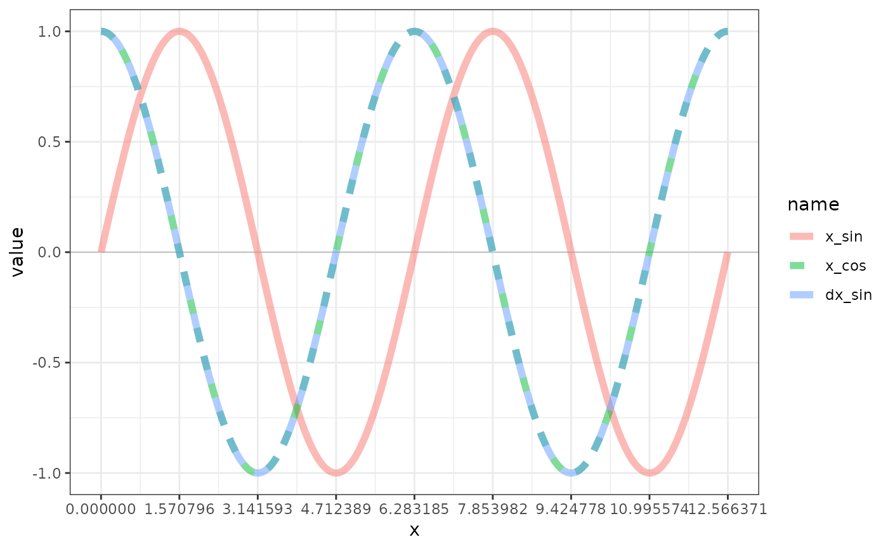

R/e_derivative_finite_difference.R
e_derivative_finite_difference.RdTo approximate a derivative to an arbitrary order of accuracy, it is possible to use the finite difference. A finite difference can be central, forward or backward. https://en.wikipedia.org/wiki/Finite_difference_coefficient Applies highest possible accuracy given the location in the vector; end points have lower accuracy and use the 1-width forward/backward method.
e_derivative_finite_difference(x, sw_derivative = 1)dx derivative
# ragged empirical time series
dat <-
tibble::tibble(
x = datasets::lh |> as.numeric()
, dx = e_derivative_finite_difference(x)
, i = 1:length(x)
)
dat |> print(n = 10)
#> # A tibble: 48 × 3
#> x dx i
#> <dbl> <dbl> <int>
#> 1 2.4 0 1
#> 2 2.4 0 2
#> 3 2.4 -0.108 3
#> 4 2.2 -0.0917 4
#> 5 2.1 -0.544 5
#> 6 1.5 0.145 6
#> 7 2.3 0.554 7
#> 8 2.3 0.0542 8
#> 9 2.5 -0.153 9
#> 10 2 -0.365 10
#> # ℹ 38 more rows
# reshape to plot
dat_long <-
dat |>
tidyr::pivot_longer(
cols = c(x, dx)
) |>
dplyr::mutate(
name = name |> factor(levels = c("x", "dx"))
)
library(ggplot2)
p <- ggplot(dat_long, aes(x = i, y = value))
p <- p + theme_bw()
p <- p + geom_hline(aes(yintercept = 0), colour = "black"
, linetype = "solid", linewidth = 0.2, alpha = 0.3)
p <- p + geom_line()
p <- p + facet_grid(name ~ ., scales = "free_y", drop = TRUE)
p <- p + scale_x_continuous(breaks = seq(0, max(dat$i), by = 2))
print(p)
# smooth sin function
dat <-
tibble::tibble(
x = seq(0, 4 * pi, by = pi / 180)
, x_sin = sin(x)
, x_cos = cos(x)
, dx_sin = e_derivative_finite_difference(x_sin) / (pi / 180)
, i = 1:length(x)
)
dat |> print(n = 10)
#> # A tibble: 721 × 5
#> x x_sin x_cos dx_sin i
#> <dbl> <dbl> <dbl> <dbl> <int>
#> 1 0 0 1 1.00 1
#> 2 0.0175 0.0175 1.00 1.00 2
#> 3 0.0349 0.0349 0.999 0.999 3
#> 4 0.0524 0.0523 0.999 0.999 4
#> 5 0.0698 0.0698 0.998 0.998 5
#> 6 0.0873 0.0872 0.996 0.996 6
#> 7 0.105 0.105 0.995 0.995 7
#> 8 0.122 0.122 0.993 0.993 8
#> 9 0.140 0.139 0.990 0.990 9
#> 10 0.157 0.156 0.988 0.988 10
#> # ℹ 711 more rows
# reshape to plot
dat_long <-
dat |>
tidyr::pivot_longer(
cols = c(x_sin, x_cos, dx_sin)
) |>
dplyr::mutate(
name = name |> factor(levels = c("x_sin", "x_cos", "dx_sin"))
)
library(ggplot2)
p <- ggplot(dat_long, aes(x = x, y = value, color = name, linetype = name))
p <- p + theme_bw()
p <- p + geom_hline(aes(yintercept = 0), colour = "black"
, linetype = "solid", linewidth = 0.2, alpha = 0.3)
p <- p + geom_line(size = 2, alpha = 1/2)
#p <- p + facet_grid(name ~ ., scales = "free_y", drop = TRUE)
p <- p + scale_x_continuous(breaks = seq(0, 4 * pi, by = pi/2))
print(p)
